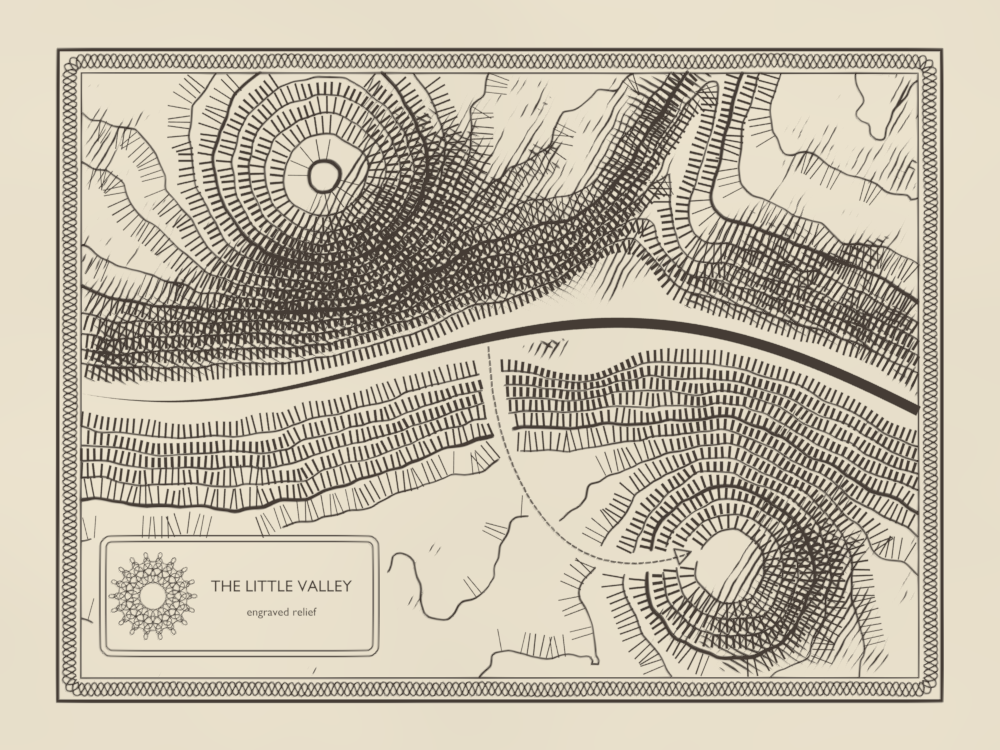
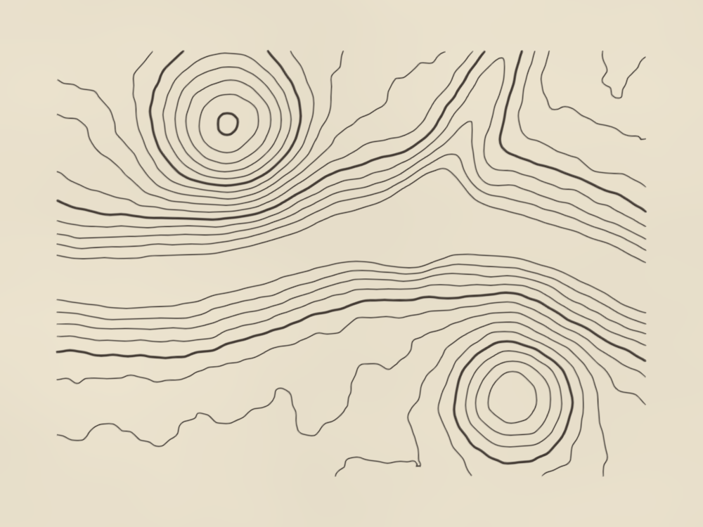
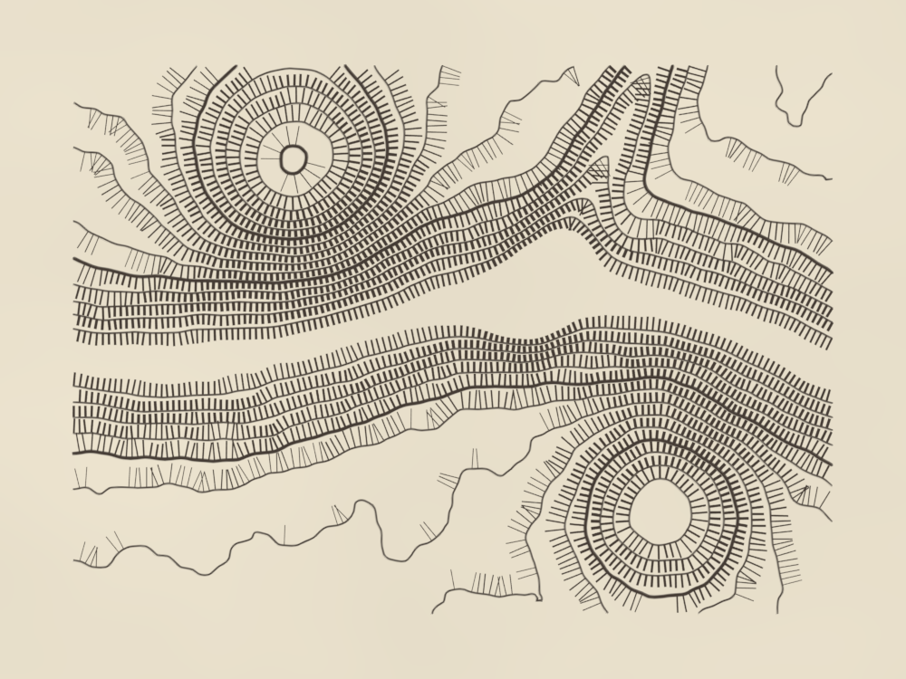
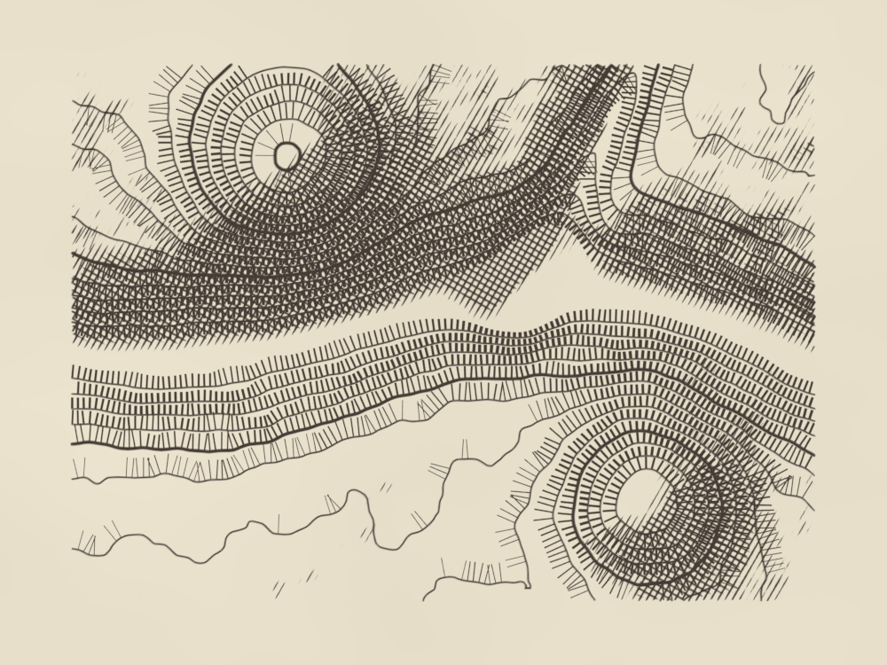
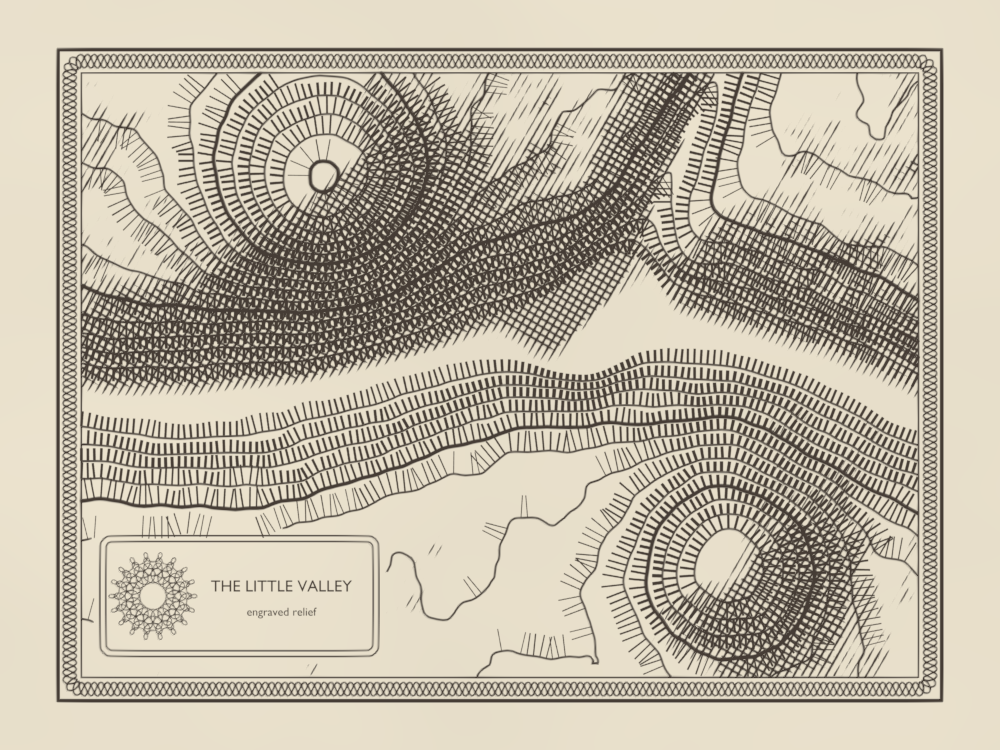
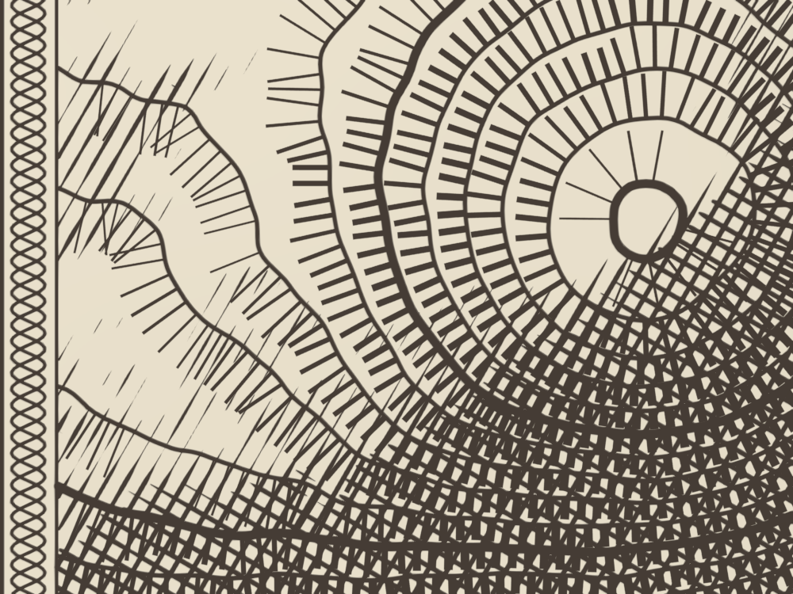
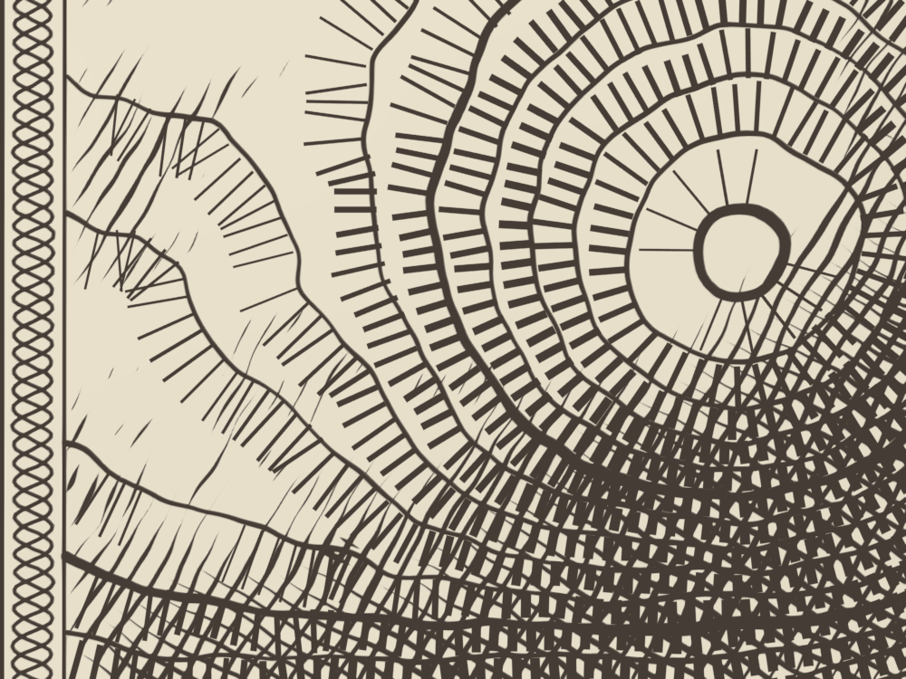
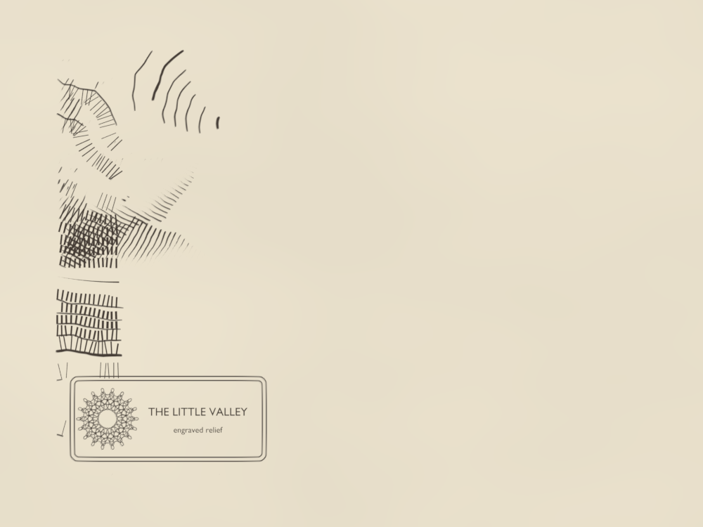
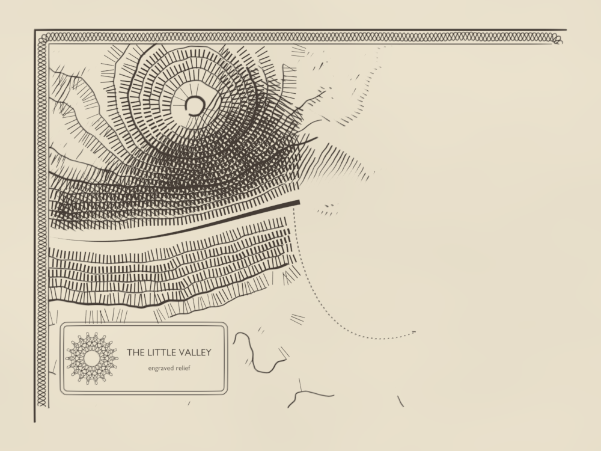
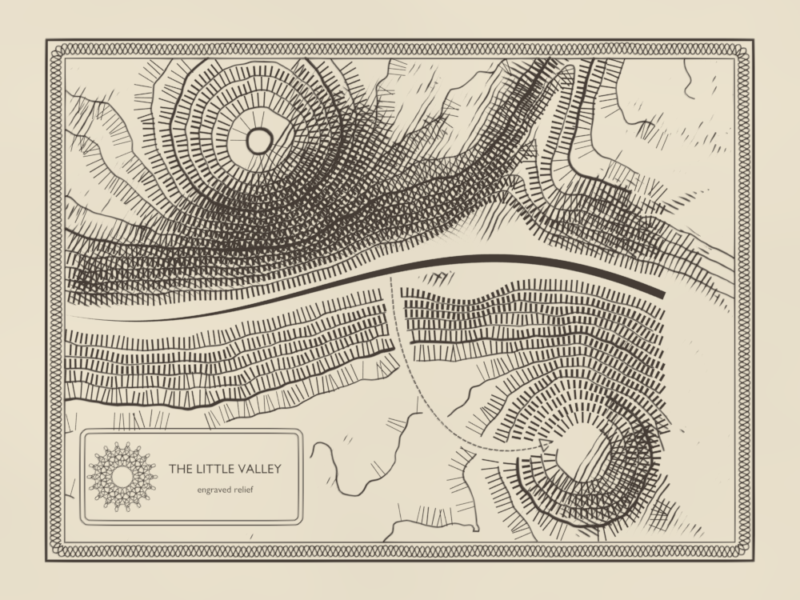

Products › BaseNode Packs › Ink & Engraving › Tutorial: Engraved map
Engraved map
An old engraved map of a small valley: a river in a gorge, two summits, a path, a border and a title. Every mark on it is a line of ink, and every line comes from one function, the height of the ground. The map is drawn as Grease Pencil strokes, and at the end it draws itself.

You will learn
- The craft. How an engraver shows relief with lines only: contours for the height, Lehmann's hachures for the slope, cross-hatching for the shade, and why each one says something the others do not.
- The language. One
.bnfile that grows a little at each step: small graphs that call each other, pipes (|>) that pass a geometry from one node to the next, arepeatzone, and modules brought in withuse. Compare two steps: the new lines are the step.
Before you start
You need three things:
- Blender 5.
- The Base Node add-on, version 0.13.1 or later.
- The Ink & Engraving pack, sold by the author of Base Node apart from the open source project. It carries the three modules this tutorial uses. The steps on this page are free to read, copy and change; the modules they call are not.
| Module | Pack | What it gives |
|---|---|---|
hachures2d | Ink & Engraving | Lehmann slope hachures, engraving cross-hatching (hatch_cross), guilloché curves, halftone dots. |
deform2d | Ink & Engraving | A pattern bent along a curve (flow_along_curve), ribbons, arrowheads. |
ink2d | Ink & Engraving | Living ink: tapered ends, wobble, bleed, and strokes that write themselves on. |
sdf2d, curves2d | free, in the add-on | A distance to a segment, for a side stream; a wave along a curve, for the border. |
This is not a first tutorial. If Geometry Nodes or .bn are new to you, start with Lunar ground: it explains a height made from a function, SetPosition, CombineXYZ and the way a step file is read.
Every block below is a complete .bn file, its code beside the nodes it builds. It opens on the graph the step adds or changes; the others are in the menu at the top of the block. Two ways to try a step:
- Drag it. Drag the file icon of its block, or its title, onto empty space in Blender's 3D Viewport, and keep Instantiate the Example: a new object carries
engraved_mapat the 3D cursor. A click on the file icon downloads the file instead. - Paste it. Press the copy button of its block, open a Geometry Node editor, press Ctrl+Shift+V and pick Add as Modifier, on any mesh object: the graph draws its own map and ignores the mesh it is given.
Look at the map from above (Numpad 7), in Material Preview. The pictures are rendered from these exact files by render.py, which adds a sheet of paper under the map and an orthographic camera straight above it.
One height, three readings
An engraver has no grey: only black lines on white paper. To show a valley, they read the ground in three ways, and each reading becomes lines of its own:
- The height: contour lines, one per level, like the waterline of a rising flood.
- The slope: hachures, short strokes that run downhill. Steep ground gets thick, close strokes; flat ground stays white.
- The light: hatching on the slopes that turn away from a light in the north-west, crossed where the shade is deepest.
In the file, these three are one function and its gradient. valley_height gives the height at any point; valley_slope measures how it changes. Contours, hachures and shade all call them, so they always agree.
1. A valley and its contour lines
The ground is a function, not a mesh: valley_height(p) is the height at the point p of the map. It adds a few simple shapes:
- A gorge along
river_course:dis how far north of the riverpis.1 - exp(-d²·8)is 0 on the river and climbs fast to 1: steep walls, then gentle shoulders. - Two summits, each a
summit: a round hill, high at its centre. - A side stream:
sdf_segment_2dgives the distance to a segment; the ground sinks near it. - Some noise, faded out on the floor of the gorge, so that the river has a flat bed to run in (step 5).
step1_contours.bn: contours, valley_height, valley_slope, river_course, summit, ink, engraved_map
contours draws one level per turn of a repeat zone. At each turn it takes a grid, deletes the faces below the level, and keeps the edges that are left with one face only: the border of the high ground, which is the contour.
Those edges follow the grid, in small stairs. One step of Newton's method moves each point onto the exact level: down the slope by (height − level) / slope². That is what valley_slope is for here; the next steps use it again.
ink turns the curves into Grease Pencil strokes and gives them their colour. Their width is the curve's radius: every fifth contour, the index contour, is twice as thick, so the eye can count the levels.
Mind instances_as_layers: false: with true, CurvesToGreasePencil makes a layer per instance, and plain curves give nothing at all.

Try: on the contours node, set interval to 0.05 and levels to 32: twice as many lines, the same ground.
2. Lehmann's hachures
Contours tell the height, but the eye reads them slowly. In 1799 Johann Georg Lehmann gave the slope its own sign: short strokes that run straight downhill, as water would. His rule: the steeper the ground, the thicker the stroke and the darker the slope. Flat ground stays white; a slope of 45° is nearly black.
step2_hachures.bn: hachures, engraved_map, Ink
- Where. The strokes start on the contours, every
spacingalong them:ResampleCurveputs a point there. They fill the band down to the next contour, as on the old maps. - Which way.
valley_slopepoints uphill; downhill is its opposite.atan2turns it into an angle for the rotation of each stroke. - How long. The next contour is
intervallower, so it isinterval / steepaway. Each stroke covers 80 % of that and leaves a thin gap. - How thick.
lehmann_hachuresmakes one stroke, along X, one unit long.InstanceOnPointsscales it to its length along X and tosteep / steepestacross. Belowflat, no stroke at all.
The strokes are flat meshes, not curves, so they cannot be Grease Pencil strokes. Ink is their material: an emission of the strokes' colour, unlit like a print.

Try: set steepest of hachures to 1.0: every slope steeper than 1 is drawn at full weight, and the map darkens.
3. Cross-hatching in the shade
Hachures show how steep a slope is, not which way it faces. Light does that: on maps it comes from the north-west, the top left, by convention.
shade compares the ground's normal with that light: 0 on the flat and the lit slopes, up to 1 on the slopes that turn away.
step3_shade.bn: cross_hatching, shade, ruling, engrave, engraved_map
hatch_cross is an engraver's tool: at a point and for a shade, it says whether the point is ink, 1, or paper, 0. Its lines lie on whole steps of (x cos a − y sin a) / spacing, and thicken with the shade: half the spacing wide at shade 0.5.
ruling draws those lines, as the ruling machine of an engraver did: parallel, spacing apart, at angle. engrave then reads hatch_cross along each line: it cuts the line where it is paper. Elsewhere the amount it is given sets the width, here Clamp(value: s * 2.0), which grows with the shade as the lines of hatch_cross do.
- Why cut a mesh, not a curve? Deleting points from the middle of a curve joins the points around the gap. The lines are meshes of edges until they are cut;
MeshToCurvethen makes one curve per piece. - Two passes. The first pass covers all the shade. The second, at 90°, gets
s * 2.0 - 1.0: nothing below half shade, then its lines thicken in turn, byClamp(value: s * 4.0 - 2.0).cross_angle: 0.0keeps each call ofhatch_crossto its own family of lines, since we draw the crossing ones ourselves.

Try: on the shade node, set light to (1.0, −1.0, 1.2): the light comes from the south-east, and the hatching moves to the other banks.
4. A guilloché border and a cartouche
A map needs a frame and a title. Engravers used guilloché for both: patterns of fine, interlaced curves, cut by a lathe, that were hard to forge. Banknotes still carry them.
step4_border.bn: frame, rosette, cartouche, clear, engraved_map
- The border: three waves along the same rounded rectangle, a third of a wave apart, braid into a chain.
wave_curve_2dpushes each point of the curve sideways by a sine;phaseshifts it. - The rosette:
guillochegives the point of a rosette att, from 0 to 1 around it. Set on every point of aCurveCircle, it bends the circle into loops. Four of them, one inside the other, make the rosette. - The title:
StringToCurveswrites it as outlines,FillCurvefills them. - Room for the cartouche:
clearcuts the relief whereunderis true. It is the same trick as in step 3: the curves become edges, lose their points under the box, and come back as curves. A mesh has no radius, so the width of each point travels as an attribute,width.

Try: on rosette, set waves to 9: fewer, larger loops. On frame, set waves to 80: a looser braid.
5. A river and a path, along their curves
The river runs on the floor of the gorge, on river_course, the same curve that dug it in step 1. The path climbs from the river to the southern summit.
Both are drawn straight, then bent along a curve: that is what deform2d is for.
step5_river.bn: engraved_map, river, path, path_line
- The river:
ribbon_outlinemakes a ribbon along the course.taper_start: 0.6starts it at width 0, at the spring in the west, and widens it over 60 % of its length, as a river grows downstream. - The path: a row of dashes along X, then
flow_along_curve. It maps the X of the row, from one end to the other, onto the length ofpath_line, and its Y onto the side of the curve. Any pattern drawn along X can follow a curve this way. - The arrow:
arrow_headsits at the end of the curve and points along it. Withfill: falseit is an outline: a curve, inked like the path. - Room again:
undernow also holds the banks and a corridor along the path.GeometryProximitygives each point its distance to the path.
Try: change the handles of path_line, its second and third points: the dashes follow any course you give it.
6. Living ink
The map is exact, and that is its flaw: a machine drew it. A hand presses harder or lighter, and a burin's cut starts and ends in a point.
ink2d adds that, without changing what the lines say.
step6_living_ink.bn: engraved_map
taper_endsthins both ends of each stroke, over 30 % of its length. Only the hatching gets it: on a long contour, 30 % at each end would erase most of the line.living_inkmoves each point a little sideways and changes its radius with a fractal noise: the lines swell, thin and wander.ink_wobbleshakes the ruled lines, the border and the path, more slowly;ink_bleedadds a fine roughness, as ink spreading into the paper.
These act on the radius and the position of curve points: the meshes, hachures and river, stay as they are. Grease Pencil draws each stroke with the radius of each of its points, so the swelling shows.


Try: set radius_variation of living_ink to 0.0, then to 1.0, and watch the contours.
7. The map draws itself
Grease Pencil strokes are made to be animated. write_on trims each stroke to a part of its length, from 0 (nothing drawn) to 1 (all of it).
Driven by the frame, it draws the map in 72 frames, three seconds at 24 frames per second.
step7_write_on.bn: engraver, engraved_map
engravergives each line its own progress: a line starts when the work, sweeping from west to east, reaches its middle, and takes a third of the time to finish. A field is computed per curve here, soPosition()is the middle of each curve.- A line not yet started is not drawn at all: at progress 0,
write_ondeletes the stroke rather than leave a dot of it. - The hachures and the river are meshes, with no length to trim: each face appears when the work is halfway through its line.



Press Space in Blender to play it. From frame 72 on, the map is whole: the picture at the top of this page.
The knobs
Every graph has its inputs, on its node. A few to start with:
| Where | Input | What it does |
|---|---|---|
contours | interval, levels | The height between two contours, and how many there are. hachures has its own interval: keep the two equal. |
hachures | spacing, weight, steepest, flat | How close the strokes are, how thick at most, the slope that gets full weight, the slope below which nothing is drawn. |
shade | light, flat | Where the light comes from, and how far a slope must turn from it to be hatched. |
cross_hatching | spacing, angle | The distance between hatch lines, and their direction. |
frame, rosette | band, waves | The width of the border, and how many loops the braid and the rosette make. |
cartouche | title | The name of your valley. |
river | width, spring | How wide the river ends, and over how much of its course it widens. |
engraver | drawing | How many frames the map takes to draw itself. |
Try: change valley_height: move a summit, add a third one with another summit. The contours, the hachures and the shade all follow, since they all read the same height.
Take it to Blender
The finished map, in one file. Drag the card onto empty space in Blender's 3D Viewport and keep Instantiate the Example: a new object carries engraved_map. A click on the card downloads the file.
The steps before it, to start again from any of them:
To render it as on this page: a camera straight above the map, Orthographic, Orthographic Scale 4.3; EEVEE; View Transform set to Standard, so the ink and the paper keep their colours. Under the map, a plane with a paper colour, unlit.
The files, with the script that renders this page's pictures, are in examples/tutorials/engraved_map/.